EUDI Wallet - Design Guide
For the EUDI Wallet ecosystem
November 2024 v1.1.0
This is a working document that holds no legal value and does not reflect any common agreement or position of the co-legislators. It presents a state-of-play of ongoing work of the eIDAS Expert Group. This document is being continuously updated and should not be considered final.
1 Introduction
1.1 Purpose of the design guide
This design guide outlines the principles, guidelines, and best practices for creating consistent and effective design solutions for the EUDI wallet. The purpose of a design guide is to ensure that all design work produced by a team or across different teams is consistent, coherent, adheres to certain standards and aligns with the overall goals and values of the project.
As many sections will be subject to national implementation this document includes guidelines to assist in creating a user interface that is useful, usable, and enjoyable to use. It also provides specific instructions and tips for creating accessible and inclusive designs.
1.2 Boundaries of the design guide
It shall be highlighted that this design guide does not aim to provide detailed design elements to be adopted by national EUDI Wallet implementations. Overall, the objective of the EUDI Wallet Design Guide is to:
- Identify key design principles and provide guidelines against these design principles;
- Identify specific areas of the EUDI Wallet for which design principles are considered important and expand on those in future iterations of the EUDI Wallet Design Guide.
The design guidelines listed in this document shall not be considered as mandatory towards the implementations of the EUDI Wallet, but rather stand as recommendations to ensure a common user experience across the different national implementations.
1.3 Importance of design consistency
UI (User Interface) consistency is important because it provides a better user experience and helps users navigate a mobile application more easily. When elements such as icons, colours, and fonts are consistent throughout an application, users can quickly learn how to use it and understand the application's intention.
Familiarity
Consistent UI elements give users a sense of familiarity and they can feel more comfortable using the application. If the user interface changes too often, it can cause confusion and frustration.
Efficiency
Consistency in the user interface can make navigation easier and more efficient. Users will know where to find the features they need, and they reduce cognitive load.
Accessibility
Consistent UI elements make it easier for users with disabilities to navigate the application. Users with visual impairments, for example, can more easily use screen readers when consistent UI elements are used.
Overall, UI consistency is an essential aspect of good user interface design. It makes the application more user-friendly, efficient, and accessible.
1.4 Overview of design criteria
Twelve design criteria have been selected which we go over in details in 'Section 2'. The first 10 are the usability heuristics from the Nielsen Norman group. They are called "heuristics" because they are broad rules of thumb and not specific usability guidelines. These are used to evaluate a User Interface, so it is good to have them as guiding principles during the design phase as well. These 10 principles are:
- Visibility of system status
- Match between system and the real world
- User control and freedom
- Consistency and standards
- Error prevention
- Recognition rather than recall
- Flexibility and efficiency of use
- Aesthetic and minimalist design
- Help users recognize, diagnose, and recover from errors
- Help and documentation
An additional 2 were added to address these important areas:
- Accessibility
- Writing
2 Design criteria
Disclaimer: The design guidelines listed in this document shall not be
considered as mandatory towards the implementations of the EUDI Wallet, but
rather stand as recommendations to ensure a common user experience across the
different national implementations. Any design elements included in the
following chapter are indicative and are only used to better illustrate the
corresponding design criteria.
2.1 Visibility of system status
The design should always keep users informed about what is going on through
appropriate feedback within a reasonable amount of time.
2.1.1 Indicative examples
Document management
When adding or removing a document the application should let the user know whether the process was completed successfully of not.
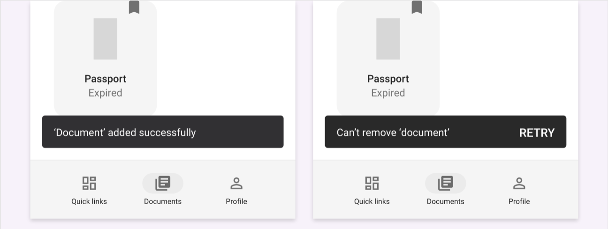 Figure 1: Document Management example
Interactive elements
Interactive elements such as buttons must have a pressed and focused state.
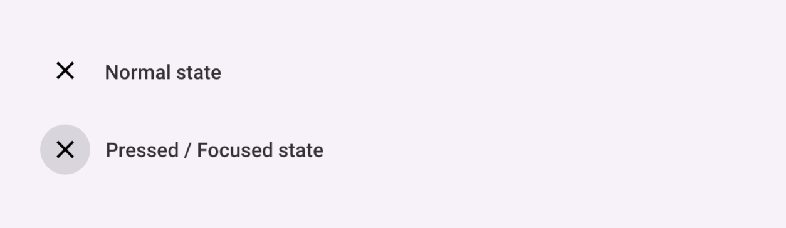 Figure 2: Interactive Elements example
2.2 Match between system and the real world
The design should speak the users' language. Use words, phrases, and concepts
familiar to the user, rather than internal jargon. Follow real-world
conventions, making information appear in a natural and logical order.
2.2.1 Indicative examples
Document representation
Documents should be (where possible) represented in the UI by what is familiar to the user instead of generic / ambiguous icons.
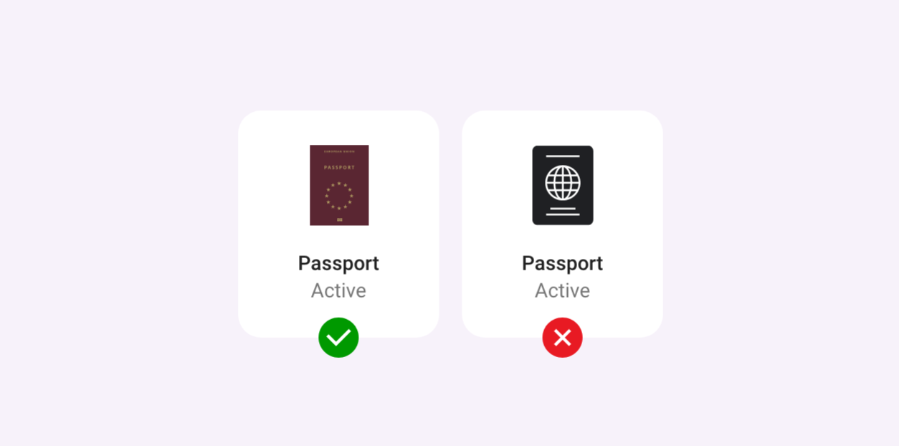 Figure 3: Document Presentation Example
Labels
Stay away from technical terms and jargon. Use labels that people use in their everyday life.
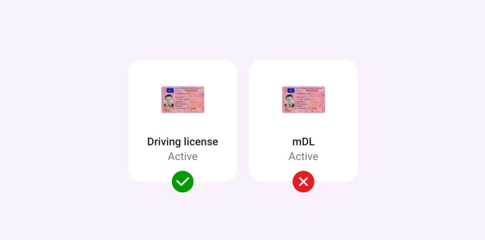 Figure 4: Labels example
Icons
People spend most of their time in other apps/websites. Use icons that are familiar and clear to them instead on ambiguous ones.
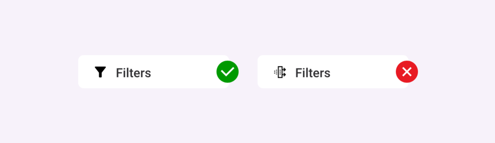 Figure 5: Icons Example
2.3 User control and freedom
Users often perform actions by mistake. They need a clearly marked "emergency
exit" to leave the unwanted action without having to go through an extended
process.
2.3.1 Indicative examples
Undo & Redo
The third principle talks about giving the freedom to the user to navigate and perform actions
- for instance, the freedom to undo or redo any accidental moves
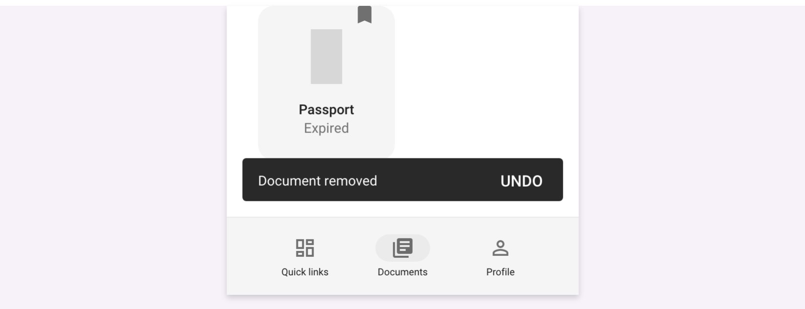 Figure 6: Undo and Redo Example
2.4 Consistency and standards
Users should not have to wonder whether different words, situations, or actions
mean the same thing. Follow platform and industry conventions.
App should follow interface standards and platform conventions. Conventions have been established that users are familiar with. This knowledge should be capitalised upon to make the app have a higher level of intuitiveness.
E.g. Position of menu, Navigation bar, Search location
2.5 Error prevention
Good error messages are important, but the best designs carefully prevent
problems from occurring in the first place. Either eliminate error-prone
conditions or check for them and present users with a confirmation option before
they commit to the action.
2.5.1 Indicative examples
Confirmation dialogue
For accidental actions such as miss-clicks
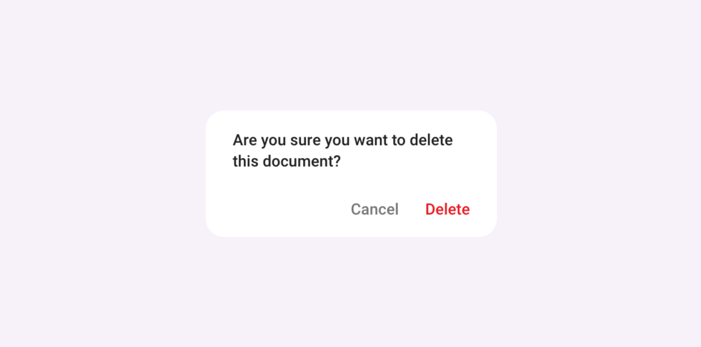 Figure 7: Confirmation Dialogues Example
Flexible inputs
Flexible inputs allow people to answer questions the way they want instead of the way a database requires them to. But these input fields come with a promise to users: "whatever format you choose, we'll take it." For example, a phone number can be entered in various ways by different people. The field can either format it accordingly on each own or provide a hint of the expected format instead of producing in-line errors or result in guesswork.
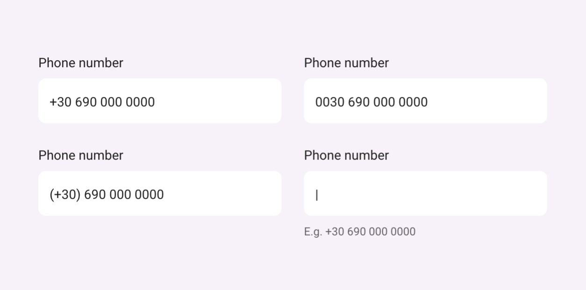 Figure 8: Flexible Inputs Example
2.6 Recognition rather than recall
Minimize the user's memory load by making elements, actions, and options
visible. The user should not have to remember information from one part of the
interface to another. Information required to use the design (e.g. field labels
or menu items) should be visible or easily retrievable when needed.
2.7 Flexibility and efficiency of use
Offer shortcuts quick ways to get one or more tasks done with your apps. They
should speed up the interaction with an app for the expert user
2.7.1 Indicative examples
It's possible to improve the efficiency of interaction with an app for experienced users with ways that will allow them to complete frequent actions faster.
Bookmarked or Recently used documents on homepage
Users can customise their home screens with the documents most relevant for them.
2.8 Aesthetic and minimalist design
Interfaces should not contain information which is irrelevant or rarely needed.
Every extra unit of information in an interface competes with the relevant units
of information and diminishes their relative visibility. Use whitespace in
harmony with your content.
2.9 Help users recognize, diagnose, and recover from errors
Error messages should be expressed in plain language (no error codes), precisely
indicate the problem, and constructively suggest a solution.
2.9.1 Indicative examples
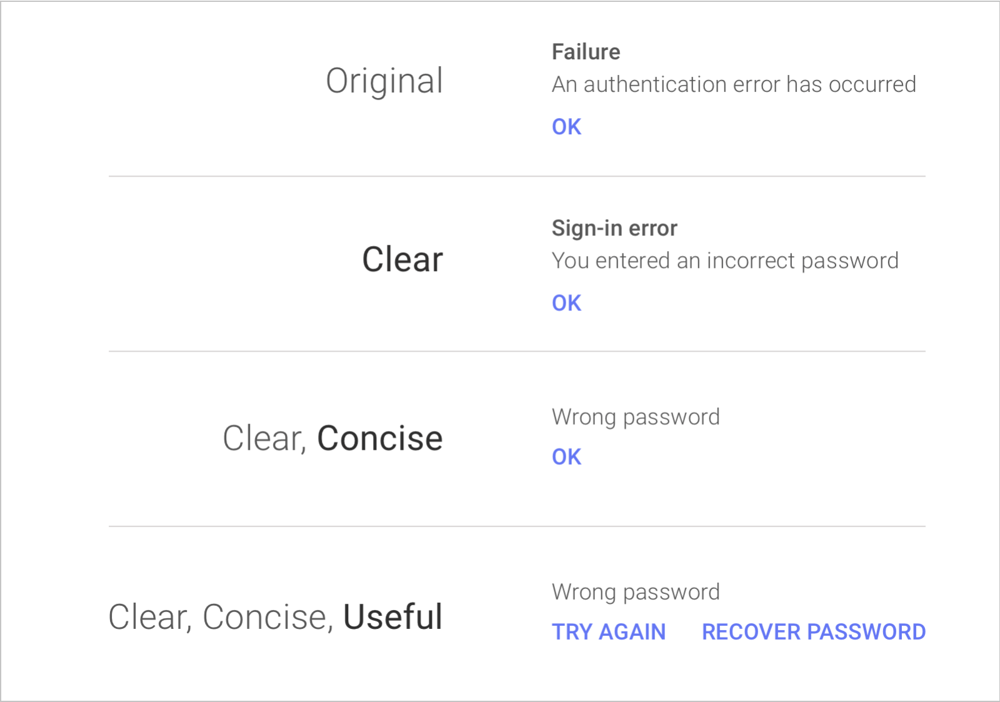 Figure 9: Error Messages Examples
2.10 Help and documentation
It's best if the system doesn't need any additional explanation. However, it may
be necessary to provide documentation to help users understand how to complete
their tasks.
2.10.1 Indicative examples
This can come in the form of App-onboarding, tutorials, F.A.Q.s or a Help section.
2.11 Accessibility
An estimated 100 million people in the EU have some form of disability, and so represent an important segment of its population and a large user group.
With Europe's ageing population this number is only going to rise. Keeping this in mind, it is important to distinguish accessibility from disabilities. Accessibility in this case, refers to making a website accessible to users who due to their temporary or permanent condition, their age, or their situation may face issues with accessing website content. For example, individuals with reduced manual dexterity due to injury or neurological conditions (permanent), or with an injured arm (temporary), or a new parent holding a baby (situational) all experience difficulties that may impede movement, coordination, or sensation or what is most commonly referred to as motor disability. Therefore, it concerns a much wider audience that one may initially think. The definition of disability differs as the term disability refers to 'long- term physical, mental, intellectual or sensory impairments which in interaction with various barriers may hinder a person's full and effective participation in society on an equal basis with others. By delivering the user experience in a way that is accessible to people with the aforementioned needs, we are providing equal access to information for all citizens regardless of their situation or condition.
2.11.1 Layout
Aim to have at least the main controls for the app at the bottom half of the screen when they are easily reachable with the thumb when operating the phone with one hand. The top half should be used for displaying information, documents, QR codes etc.
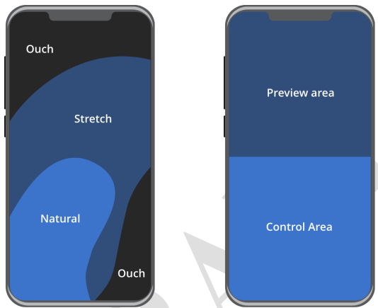 Figure 10: Layout
2.11.2 Target sizes
A target size is the area that can be activated in order to interact with an element. Individuals with dexterity challenges may find it more challenging to utilize a website if the target size is smaller. In this section, we'll examine methods (Apple's HIG and Google's Material) for generating target sizes that are user-friendly, uniform, and properly spaced. A person's ability to interact with smaller controls may be impacted by a disability or a combination of disabilities that affect their motor movements and dexterity, as well as by the act of using a website while on the move, such as while walking or commuting.
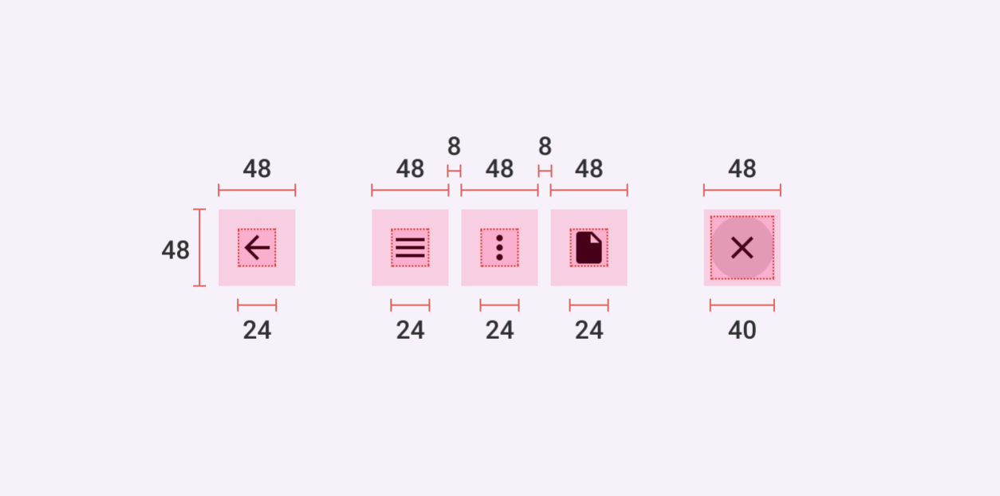 Figure 11 : Target Sizes
2.11.3 Colour contrast guidelines
Text to background colour contrast should meet a 4.5:1 ratio.
How to check: enter the hex codes for the foreground and background colours using: https://whocanuse.com/
2.11.4 Font size guidelines
The UI should be designed to support up to x 2 the text size without breaking.
2.11.5 Animations
Avoid adding flashing, blinking, and rotating animations on the background. Excessive screen movement with no mechanism to control can make it difficult for users to gather information.
Animations and transitions should be:
- Informative (Motion design informs users by highlighting relationships between elements, action availability, and action outcomes.)
- Focused (Motion focuses attention on what's important, without creating unnecessary distraction.)
- Expressive (Motion celebrates moments in user journeys, adds character to common interactions, and can express a brand's style.)
2.11.6 Screen readers
Make sure you provide the relative support for screen readers. Consider how the reader is going to read the screen and place items accordingly for convenience. In case of having to read through a lot of content to get to the main controls, consider providing a skip button.
2.12 Writing
Text should be understandable by anyone, anywhere, regardless of their culture or language. UI text can make interfaces more usable and build trust. Text should be clear, accurate, and concise.
2.12.1 Write in the present tense
Use the present tense to describe product behaviour. Avoid using the future tense as this usually requires later updates.
Use the present tense to describe product behaviour. Avoid using the future tense to describe the way a product always acts. When you need to write in the past or future tenses, use simple verb forms. This may not be applicable to all languages; the overall goal is to be as concise as possible without compromising clarity.
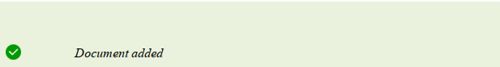
Write in the present tense.
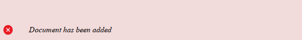
Don't write in different variations of the present tense, such as the present perfect tense.
2.12.2 Begin with the objective
When a phrase describes a goal and the action needed to achieve it, start the sentence with the goal.
To add a document, click +
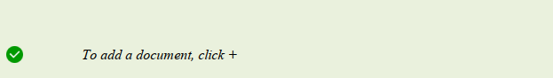
Start a statement with the objective ("to add a document") and end it with the user action ("click + ").
Click + to add a document
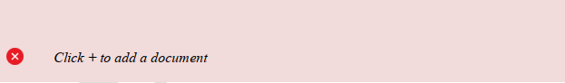
Don't state the action the user takes ("Click + ") before the objective ("to add a document").
2.12.3 Avoid combining first and second person
To avoid confusing the user, avoid using "me" or "my," and "you" or "your," in the same phrase.
Change your preferences in My Account
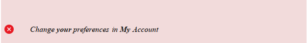
Don't refer to the user in both the second person and the first person within the same phrase.
Change your preferences in Account
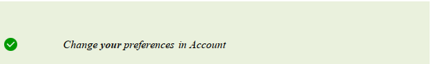
3 EUDI Wallet - Design Considerations
This section lists specific areas/features on which design considerations are deemed important to ensure a common user experience across the national implementations of the EUDI Wallets. It shall be noted that this list highlights specific areas which are prioritised as important but does not aim to be an exhaustive list.
3.1 User authentication
- Covering common user authentication aspects, e.g. PIN, biometrics etc.
- Exploring the balance between the corresponding security aspects comparing to the user friction points throughout the entire user flow (e.g. required only at the point of sharing data? Or at login as well?)
- Guidelines around 'user consent' in data sharing scenarios (e.g. requesting user consent, enforcing trust)
3.2 Browsing credentials/documents
- Guidelines in relation to displaying a list of credentials/attestations in the EUDI Wallet
3.3 QR code presentation
- Guidelines in relation to presenting the QR code for the corresponding proximity use cases
3.4 Confirmation/Summary/Authentication results
- Guidelines in relation to the authentication results presentation, i.e. successful/unsuccessful identification and authentication
- Guidelines in relation to data transfer results for proximity sharing use cases, i.e. successful/unsuccessful data transfer)
- Covering guidelines related to the confirmation/summary results presented to the user
3.5 Error Messages
-
Handling/Display of error messages in different scenarios
- Erroneous user credentials
- User is not authenticated.
- Document is considered invalid.
- Relying party is not considered trusted.
-
Principles/guidelines on how these shall be presented/structured etc.
3.6 Privacy/Security by Design
- Covering applicability of privacy/security aspects in the data sharing process (e.g. visual representation _of 'password' field)
3.7 Trust Mark
- Establish trust through the use of the EUDI Wallet Trust Mark
- Applicability and placement in the corresponding sharing processes
3.8 Notification guidelines
- Guidelines in relation to displaying user notifications (where applicable) in the EUDI Wallet
4 Conclusion
In conclusion, this EUDI Wallet Design Guide document represents the first iteration of what intends to be a 'living' document, which will be further elaborated for the specificities of the EUDI Wallet functionalities, as listed in section 3 of the document. As such, it is recognized that there may be areas for further elaboration and analysis on which feedback and improvement suggestions from stakeholders is anticipated.
Taking into consideration that the EUDI Wallet Design Guide shall be applicable for the national implementations of the EUDI Wallet, the boundaries of this document are set to common principles that shall be applicable to all national implementations. These shall be considered as recommendations to ensure a similar user experience across the different national implementations. By taking a collaborative approach and continuously improving upon this document, the aim is to create a EUDI Wallet Design Guide that assists in the national implementations, while at the same time meets the user expectations. We encourage stakeholders to review this EUDI Wallet Design Guide document thoroughly and kindly provide feedback that will assist if further shaping this design guide.